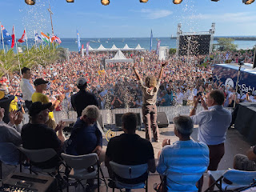
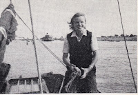
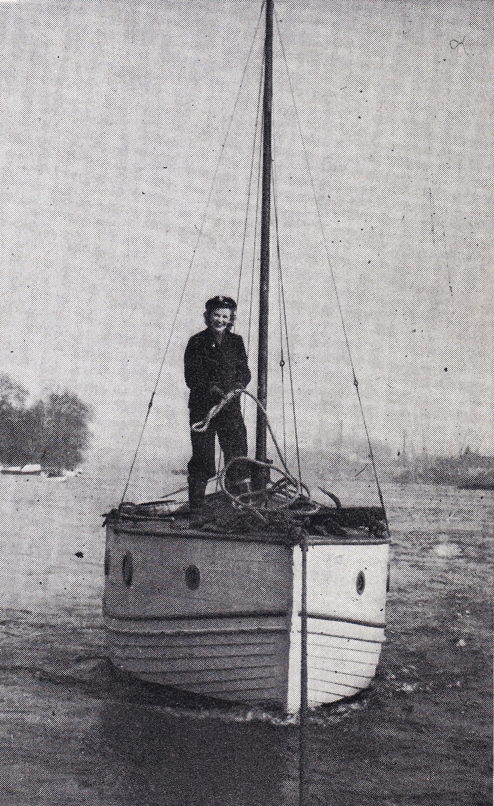
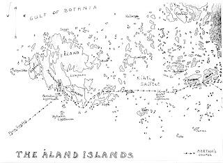
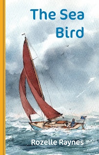

 |
| Golden Globe prizegiving |
{kind=link}

It couldn’t last. All categories of Boats Crew Wrens were abolished in November 1945 and Rozelle had no option but accept demobilisation and return to her life of upper-class privilege. At her farewell interview the kindly RN Commander ‘muttered something about making himself personally responsible for seeing I was offered an interesting job in a boatbuilding firm.’ ‘I suddenly lost all control and bursting into floods of tears ran blindly from his office into the brave new world outside.’ Even today there’s still some distance to go before women working in boatyards is felt to be normal. There were no such employment opportunities for Lady Rozelle in December 1945.
 |
| scrubbing decks |
Rozelle successfully refused her London Season.
Instead, she and two friends found work as yacht hands in the summer of 1946,
accepting wages of £1 a week, a bullying employer and a working day that began
at 0400. They were not sacked for any lack of willingness, only as a result of the
owner’s incompetence and fraud. She was deeply disappointed. ‘If the child had a boat of her own,’ Rozelle’s
mother suggested tentatively, ‘it might perhaps settle her and stops her going
off on these very undesirable voyages in other people’s boats?’
Despite their grand titles and impressive
estate, Earl and Countess Manvers were not especially cash-rich in the late 1940s. However Rozelle had had been left £100 in war savings bonds and the plumber employed
to fix the boiler in her parents’ London house had a friend on the Essex coast
with a converted life-boat to sell. Despite her mother’s dismay when she discovered
that this small vessel had only a bucket for use as a lavatory, her parents
paid the difference and Rozelle became proud owner of the Imp, a small
and leaky motorboat with an unreliable engine.
 |
| Imp being towed |
This didn’t
help when Imp’s rudder blade split twelve miles out from Dover on her first
attempt to cross the Channel. Her friend Winkle, a former Wren, poured them
both a couple of stiff rum toddies, after which they used the bread knife to
saw out a piece of engine casing, then attached it to the remaining rudder
stock with a combination of cod-line and suspender belt before limping
mournfully back into harbour.
Cross-Channel success was not achieved until
1949 when Rozelle and another ex-Wren, Margaret Boggis, found their way through
the wilderness of wrecks still outside Dunkerque and brought up for the night
in their first foreign port.
‘Ou est le capitaine?’ asked a bibulous
fisherman, sitting on a bollard above the Imp and peering into her cabin. 'Je vois seulement deux jeune filles... ou est le pilote?' He reeked of ‘Gauloise Bleu, raw garlic and Pernod’ and soon collected a crowd
of copains to gawp at the new arrivals. Rozelle attempted to ignore them,
focusing on the soup she was preparing for her and Margaret’s supper. She got angry
when she felt herself being slapped by something cold and wet, and heard laughter
‘like gale- driven surf’. The object was a giant plaice being lowered from the quayside -- a gift to welcome the two young women to France. Classics teacher Margaret raised her
can of lager, ‘Vive la France!’
‘Vive les jolies filles d’Angleterre,’ an old fisherman replied.
Rozelle told this story in her second volume of autobiography, The Sea Bird. We are almost ready to publish this as a sequel to Maid Matelot. It’s an incremental tale, covering almost two decades after she was forced to leave the Wrens, detailing the small acts of determination that enabled her to adventure alone and escape ‘the fetters of the land’. Slowly, doggedly, she built her knowledge and competence, though it took a shipwreck, where she and her friend Winkle were lucky to escape with their lives, to persuade her she must make the transition from engine to sail. Again, she had much more to learn before she could explore the coasts of Europe single-handed, trusting to the kindness of strangers. By the end of the 1950s she had sailed her 25’ Folkboat, Martha McGilda, two thousand miles to Finland, with a small outboard engine and occasional help from friends. She had ventured defiantly close to Soviet Russia to raise a courtesy flag. |
| Hand-drawn map of her journey to the Aland Islands |
{kind=link}
Five years later she achieved a personal happy
ending when she married for the second time.
Second time?
In 1953 Rozelle had succumbed to expectations
and married a Suitable Partner. He was a gallant Major from the Coldstream Guards and is
never mentioned in her story -- except perhaps once, obliquely, when she says she
was ‘at a gloomy crossroads’ in her life and needed time to think. All the way
to the Gulf of Bothnia.
‘Now or never, which is it to be? But I knew,
instinctively, that there was really no question of turning back, so I leapt into
action, glad to be fully occupied at last.’ There’s more to this decision than
the recognising the necessity to leave a sheltered harbour and warm cabin for a
cold wet night, picking a lonely course through the skerries, with the
barometer falling and the compass unreliable. The excellence of The Sea Bird,
in my view, is that she is not necessarily speaking to the exceptional sailor –
or even solely to sailors. Yes, she was exceptional but there are many people who
have to nerve ourselves to make our individual positive decisions to act, not procrastinate.
‘Waar is de Kapitein?’
‘Ik ben der Kapitein.’
Rozelle reflects, ‘In the old days, when I was sailing around single-handed, I often wondered about how I would feel if I had to share the boat permanently with someone else.’ She divorced her husband in 1961 and took a job as a purser on a cross Channel ferry. The experiences of The Sea Bird did more than earn Rozelle her Captain’s hat – or get her to the Aland Islands, or (unexpectedly) give her the self-knowledge and assurance to cope with the new challenge of double-handed sailing – they also gave her the confidence to write.
 |
| Claudia Myatt's front cover based on a sketch by Rozelle Raynes |
{kind=link}
Last week (July 4th 2023) I signed a contract with Adlard Coles to write more about the experiences of 20th century women sailors -- the Lionesses of the Sea.